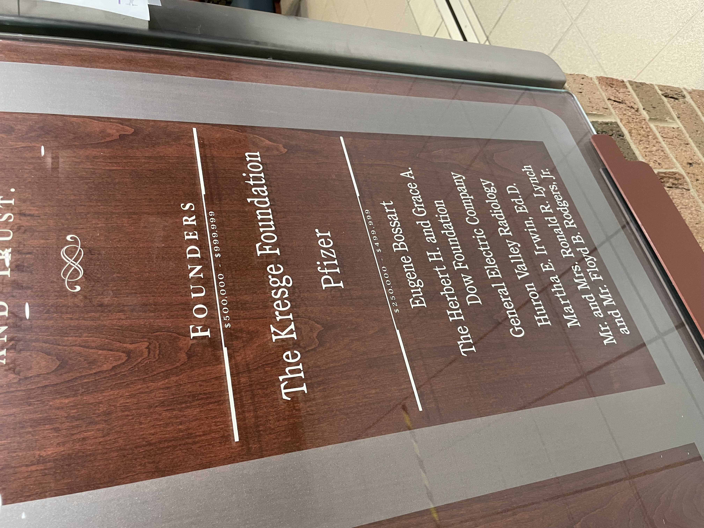

Excerpts from 8 online interviews with Julia Broxholm, Mary Siciliano, Nicole DiPaolo, Ellen Elder, James Wilhemsen, Naomi Oliphant, Jean Schneider, and Louis Nagel in 2024
Eugene Bossart, Newspaper Photo, 1954
From Bentley Historical Library: Box 19, Michigan Daily, John Hirtzel, University of Michigan. Under copyright of The Michigan Daily, used with permission.
Link to digitized Bossart article from 1954
From October 14, 1954, vol. 65, issue 21, this article was digitized by the Michigan Daily and the Board for Student Publications. It remains under copyright and no part should be republished without obtaining permission.
1982 Professorship Appointment Bulletin
1982 Earl V Moore Professorship Appointment: Eugene Boxart, Box 13, News and Information Services (University of Michigan) Faculty and Staff Files, Bentley Historical Library, University of Michigan. Used with permission.
Bossart Memorial Program, 2012
University of Michigan School of Music Theatre & Dance, Eugene Bossart Memorial Concert Program (13 October 2012), Bentley Historical Library, University of Michigan. Used with Permission.
Retirement Memoir, 1984
Bossart Retirement Memoir: Eugene Boxart, Box 13, News and Information Services (University of Michigan) Faculty and Staff Files, Bentley Historical Library, University of Michigan. Used with permission.
1968 Staff Biography
Bossart Staff Biography: Eugene Boxart, Box 13, News and Information Services (University of Michigan) Faculty and Staff Files, Bentley Historical Library, University of Michigan. Used with permission.
Donor Plaque at the Ellen Thomson Women's Health Center
Photograph by Jean Schneider, used with permission.

Undated Faculty Photo
Faculty Photo No-Date: Eugene Boxart, Box 13, News and Information Services (University of Michigan) Faculty and Staff Files, Bentley Historical Library, University of Michigan. Used with permission.
Photo: Bossart as Second Harald Haugh Award Winner, 1976
Snapshot of Harald Haugh Award Winners, given for excellence in studio teaching. Photograph Jean Schneider 2024.
1951 University Musical Society Printed Concert Program
Gladys Swarthout and Eugene Bossart in concert, 9 October, 1951, provided by Jean Schneider.
Schoolcraft College Brochure
Scan of 2004 Schoolcraft brochure, donated by Ellen Elder.
1975: First Degree Program Offer
Scan of School of Music bulletin vol. 5 no 6, 27 August 1975 advertising for the first time a Master of Music degree with a concentration in Accompanying and Chamber Music. Provided by the Bentley Historical Library of the University of Michigan.